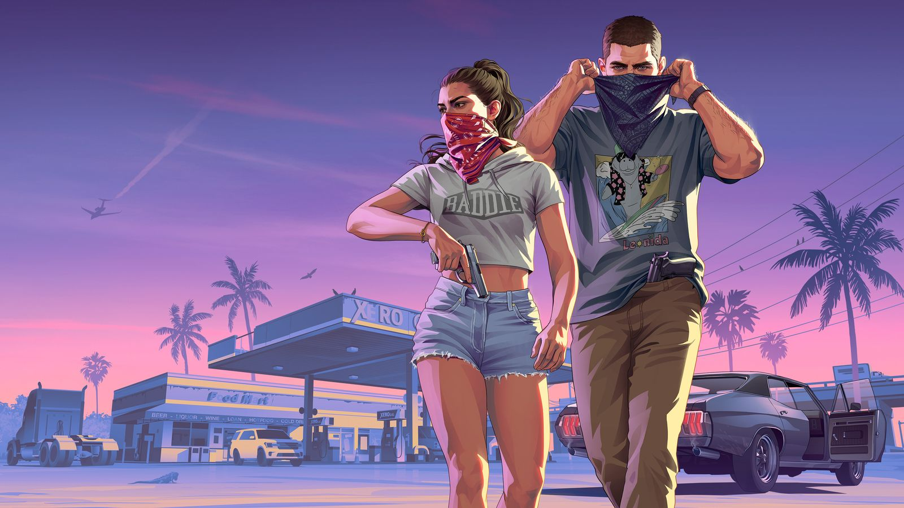

The notebook
GTA 6: WHAT WE KNOW

When does GTA 6 come out?
19 November 2026, at midnight local time, on PS5 and Xbox Series X|S. Preload opened on 10 November.
Who are the main characters?
Two leads: Jason Duval and Lucia Caminos. Rockstar says an easy score goes wrong and the pair end up in a criminal conspiracy across Leonida.
Where is GTA 6 set?
The state of Leonida, including Vice City and the Leonida Keys.
How much space does it need?
Rockstar says the pre-load needs up to 212GB, depending on your console. That's an upper limit, not an exact install size.
Which radio stations are confirmed?
Six so far: Cocoteo, Back Country, Afro Bank FM, The Chamber 106.6, Flash FM and Dirty South Classics. You can also listen on foot, through headphones on your phone in the game.
Is there a PC version?
Not announced. An early-2027 PC date is a rumor, not something Rockstar has said.
Images: Rockstar Games
From the channel
MEET THE PEOPLE
Hand-drawn
MAP OF LEONIDA
A rough fan sketch of the places Rockstar has named. Not to scale, and not the official map: that one comes free with the game on launch day.
Vice City: the big city, GTA 6's take on Miami.
Leonida Keys: the island chain off the southern tip.
Grassrivers, Ambrosia, Port Gellhorn and Mount Kalaga: other regions Rockstar has named.
From the channel